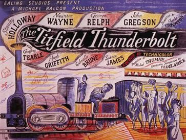

The Titfield Thunderbolt
Studio: The Rank Organisation
Starring: Stanley Holloway, George Relph, Naunton Wayne
Director: Charles Crichton
Writer: T. E. B. Clarke
Producer: Michael Truman
The Titfield Thunderbolt is a 1953 British comedy film directed by Charles Crichton and starring Stanley Holloway, Naunton Wayne, George Relph and John Gregson. The screenplay concerns a group of villagers trying to keep their branch line operating after British Railways decided to close it.
Trivia
- Assistance was provided by the Railway Executive in charge of British Railways, and a number of branch lines were examined in pre-production, including the Kelvedon and Tollesbury Light Railway, the Mid-Suffolk Light Railway, the Kent & East Sussex Railway and the Lambourn Valley Railway.
- Shooting was largely carried out near Bath, Somerset, on the Camerton branch of the Bristol and North Somerset Railway, along the Cam Brook valley between Camerton and Limpley Stoke.
- The branch had closed to all traffic on 15 February 1951, but was reopened for filming.
Filming Locations
- The scene of the Squire attempting to overtake Harry Hawkins' steam roller was filmed in Carlingcott.
- The scene was jointly filmed in the Oxfordshire market town of Woodstock and in Richmond Park, London, but the lead-in scene with the turntable was filmed at Oxford locomotive depot with a real engine.
- The earlier scene of GWR 1400 Class No. 1401 crashing and getting wrecked as it heads down an embankment used realistic scale models filmed on a set at Ealing Studios.
Previous Showings
1 Run • 0 Festivals
All runs on record (1):
- November 6 - 9, 1993w/ Genevieve